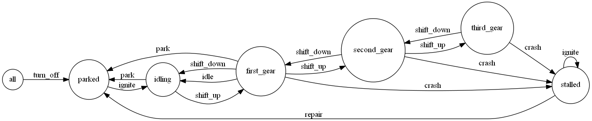

CakePHP State Machine Behavior
StateMachineBehavior for CakePHP.
This project is maintained by davidsteinsland
CakePHP State Machine


Documentation is not finished yet either. See the tests if you want to learn something.
What is a State Machine?
http://en.wikipedia.org/wiki/State_machine
Installation
First you need to alter the tables of the models you want to use StateMachine:
ALTER TABLE `vehicle` ADD `state` VARCHAR(50);
ALTER TABLE `vehicle` ADD `previous_state` VARCHAR(50);
Features
- Callbacks on states and transitions
- Custom methods may be added to your model
-
is($state),can($transition),on($transition, 'before|after', callback)andwhen($state, callback)methods allows you to control the whole flow.transition($transition)is used to move between two states. - Roles and rules
- Graphviz
Naming conventions
-
Transitions and states in
$transitionsshould be lowercased and underscored. The method names are in turn camelized.Example:
shift_up=>canShiftUp()=>shiftUp()first_gear=>isFirstGear()
How to Use
App::uses('StateMachineBehavior', 'StateMachine.Model/Behavior');
class VehicleModel extends AppModel {
public $useTable = 'Vehicle';
public $actsAs = array('StateMachine.StateMachine');
public $initialState = 'parked';
public $transitionRules = array(
'ignite' => array(
'role' => array('driver'),
'depends' => 'has_key'
)
);
public $transitions = array(
'ignite' => array(
'parked' => 'idling',
'stalled' => 'stalled'
),
'park' => array(
'idling' => 'parked',
'first_gear' => 'parked'
),
'shift_up' => array(
'idling' => 'first_gear',
'first_gear' => 'second_gear',
'second_gear' => 'third_gear'
),
'shift_down' => array(
'first_gear' => 'idling',
'second_gear' => 'first_gear',
'third_gear' => 'second_gear'
),
'crash' => array(
'first_gear' => 'stalled',
'second_gear' => 'stalled',
'third_gear' => 'stalled'
),
'repair' => array(
'stalled' => 'parked'
),
'idle' => array(
'first_gear' => 'idling'
),
'turn_off' => array(
'all' => 'parked'
)
);
public function __construct($id = false, $ds = false, $table = false) {
parent::__construct($id, $ds, $table);
$this->on('ignite', 'after', function() {
// the car just ignited!
});
}
public function isMoving() {
return in_array($this->getCurrentState(), array('first_gear', 'second_gear', 'third_gear'));
}
public function hasKey($role) {
return $role == 'driver';
}
}
class Controller .... {
public function method() {
$this->Vehicle->create();
$this->Vehicle->save(array(
'Vehicle' => array(
'title' => 'Toybota'
)
));
// $this->Vehicle->getCurrentState() == 'parked'
if ($this->Vehicle->canIgnite('driver')) {
$this->Vehicle->ignite('driver');
$this->Vehicle->shiftUp();
// $this->Vehicle->getCurrentState() == 'first_gear'
}
}
}
Graphviz
Here's how to state machine of the Vehicle would look like if you saved:
$model->toDot()
into fsm.gv and ran:
dot -Tpng -ofsm.png fsm.gv
